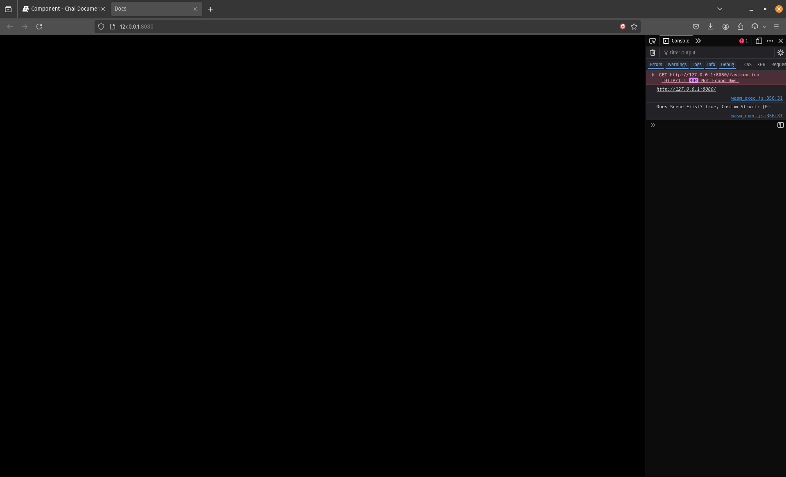
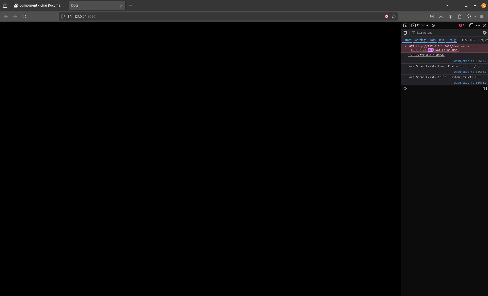
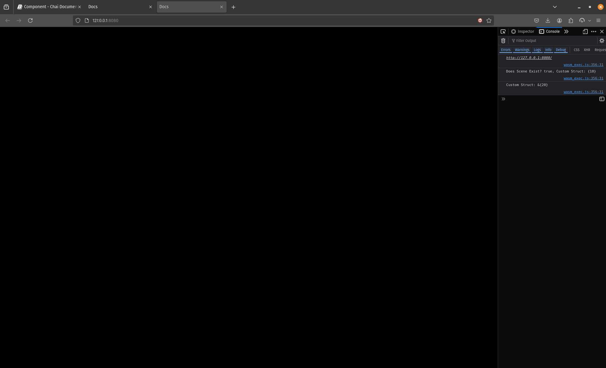
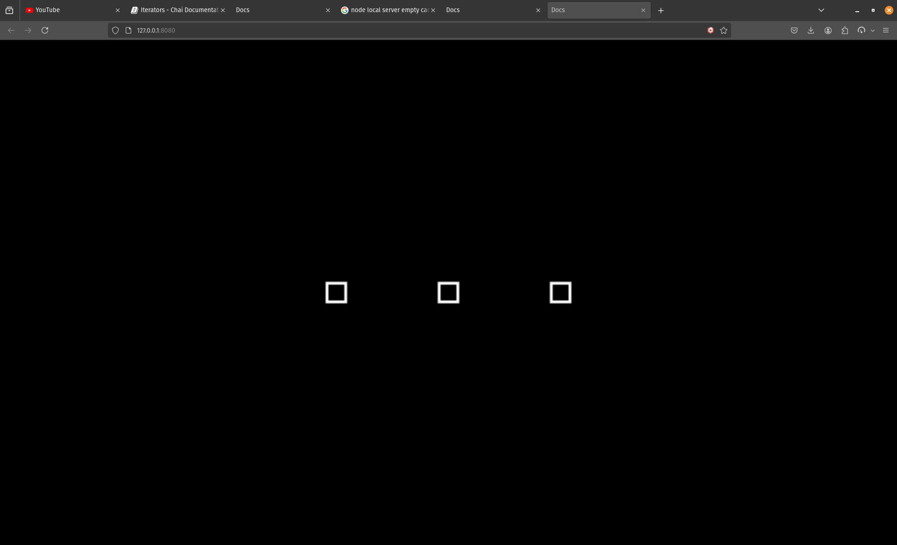

Home
I would like to take a few lines to thank you, oh reader. for choosing to take some time off of your day and check this lightweight and humble engine.
This engine is the culmination of my very basic understanding of the underworkings of Game Engines,
Beware though, for this engine might make you want to pluck your hairs, please bear with it.
Tools Required
- Go programming language
- A modern web browser
- A tool for hosting local servers (node/python)
Installation
- Clone this repo Chai Examples.
- Run "go get" in the root directory.
- If you're using vscode then you can start right away, If you're using another code edit then you'd need to configure go for WASM build settings locally.
Specifics
-
Chai is 2D, Web-focused, and Lightweight engine.
-
It uses WebAssembly through Go's WASM compiler to build Apps for the web.
-
Chai is an ECS based Game Engine. Which means that unlike OOP based Engines, Chai separates Logic from Data. Making the Components and Entities only data holders and identifiers. And having the logic be commonolized (generalized) amongst the specified components.
-
Current Cull Render Benchmark for Quads (no sprites) Video
Run
In the "Chai Examples" folder, run:
- make build Building the project
- make serve Creating a local server for the project and opening it in the browser
- make run Combines build and serve
Application
type App struct {
Width int
Height int
Title string
OnStart func()
OnUpdate func(float32)
OnDraw func(float32)
OnEvent func(*AppEvent)
}
An application is Chai's main entry point. It contains your App's info and life cycle. It can be declared as a variable of type App.
var app chai.App = chai.App {
Title: "",
Width: 1920,
Height: 1080,
OnStart: func(){},
OnUpdate: func(_delta_time float32){},
OnDraw: func(_delta_time float32){},
OnEvent func(_event *AppEvent){},
}
In order to run the Application, All You have to do is call "chai.Run(application_variable_pointer)" in the main file of your go project.
func main() {
chai.Run(&app)
}
If you try running make run, You'll get a looooong stream of errors in the console of the page. If you go all the way to the top you'll eventually see "Scene is set to none".
So next, we'll be discussing scenes.
Scene
type Scene struct {
Background RGBA8
Ecs_World *ecs.World
start_systems List[func(*Scene)]
update_systems List[func(*Scene, float32)]
render_systems List[func(*Scene, float32)]
tags Map[string, List[EntId]]
}
A scene is the container of your level's objects and logic. It is on align with Unity's understanding of a scene, Which states that scenes and objects (prefabs) are separate unlike Godot's.
You can create a scene inside an App's OnStart method.
OnStart: func(){
_test_scene := chai.NewScene()
}
As we mentioned Chai is an ECS based Game Engine, Which means that Objects only contain data, while the logic is cluttered somewhere else
It goes like this
- Components are data holders (name, position, uv, speed, etc...)
- Entities are Identifiers that point towards the specific component
- Systems use the Entities to Get All the Components you would want to do logic on.
Entities
An Entity is just an Id (uint32), Entities can be seen as a key in a dictionary. The key points to a specific value. And as such you can retrieve and manipulate the value thanks to the key pointing to its location.
In Game Engines, You'd typically think of Entities as Objects that hold Data and perform Logic. In ECS this definition would get dissected.
Creating An Entity is very easy,
_entity := _test_scene.NewEntityId()
Components
A Component is any piece of data. Whether that be a struct or a native type, It can be turned into a component
type CustomComponent struct{
u int
}
_entity := _test_scene_NewEntityId()
_component := CustomComponent{
u: 0
}
_test_scene.AddComponents(_entity, chai.ToComponent(_component))
With this, The Engine has acknowledged that on this Scene, The component "_component" has been attached to this Identifier "_entity".
Now how do we manipulate the component? In Unity it would be something like getting a reference of the component in your script and then use it inside the script itself.
In Godot, You would either use the Node you've attached the script to or Get a reference to the Node you would want to manipulate.
Chai also needs to get a reference to the Component to use it like any other Engine, but the way we do that is different, Which takes us to Systems.
Systems
Systems are basically functions. They perform just like you would perform a function being called inside "Start" or "Update" in Unity(_ready, _process in Godot).
Writing A System
func CustomSystem(_this_scene *chai.Scene) {
chai.LogF("Chaiiii")
}
Then you would need to add it to the scene.
_entity := _test_scene_NewEntityId()
_component := CustomComponent{
u: 0
}
_test_scene.AddComponents(_entity, chai.ToComponent(_component))
_test_scene.NewStartSystem(CustomSystem)
NewStartSystem is exactly that, It adds the System we just created into the Scene's Start runtime Now what is a Scene runtime?
We'll be talking about it next.
Runtime
Runtime is the concept of the Scene's run cycle, The Scene starts with "Start" Then it goes into cycling between "Update" and "Draw" every frame.
There are 3 different Runtime:
- Start
- Update
- Draw
Start
Start is called only once, At the start of the scene. It's useful for setting up the scene and creating Entities and Components.
Adding A Start Runtime System
func CustomSystem(_this_scene *chai.Scene) {
}
OnStart: func(){
_test_scene := chai.NewScene()
_test_scene.NewStartSystem(CustomSystem)
}
The first code is how you make a Start Runtime System. You just create a normal function and as a parameter you give a pointer of the scene this system will running on.
import (
chai "github.com/mhamedGd/chai"
)
func CustomSystem(_this_scene *chai.Scene) {
chai.LogF("Chai!!")
}
var app chai.App = chai.App{
Title: "Docs",
Width: 480,
Height: 480,
OnStart: func(){
_test_scene := chai.NewScene()
_test_scene.NewStartSystem(CustomSystem)
// Transition into this scene
chai.ChangeScene(&_test_scene)
},
}
func main(){
chai.Run(&app)
}
Try then to run it "make run", Now the Output Should be like this.
You can Access the Console with (Ctrl/Cmd + L.Shift + C)

Update
Update just like Start is a runtime of Scene, but unlike Start it runs for every frame after Start, It's useful for game logic,
Adding An Update Runtime System
func CustomUpdateSystem(_this_scene *chai.Scene, _dt float32) {
}
OnStart: func(){
_test_scene := chai.NewScene()
_test_scene.NewUpdateSystem(CustomUpdateSystem)
}
Notice how here the Update Runtime System takes 2 parameters, not 1. The first is a reference to the Scene the System is running on, While the Second is the delta-time of the updated frame.
import (
chai "github.com/mhamedGd/chai"
)
func CustomUpdateSystem(_this_scene *chai.Scene, _dt float32) {
chai.LogF("Chai Deltatime: %v", _dt)
}
var app chai.App = chai.App{
Title: "Docs",
Width: 480,
Height: 480,
OnStart: func(){
_test_scene := chai.NewScene()
_test_scene.NewUpdateSystem(CustomUpdateSystem)
// Transition into this scene
chai.ChangeScene(&_test_scene)
},
}
func main(){
chai.Run(&app)
}
Try it now with "make run"

Draw
Draw is almost exactly the same as Update, the Difference is that it runs after Update in the Scene Life Cycle.
ECS
Chai is a an ECS based game engine, That means it ditches the traditional way of handling objects and logic and instead resorts to separating the logic from entities (objects)
ECS Workings
The way an ECS system works is by defining Entities that have Components attached to them and then applying logic unto those Components by exploiting Systems
If we compare the normal regular game engine, How you would normally go on implementing a new mechanic is that you would usually create a new Component or a Script attached to the Component. You would put the logic and the data required by the mechanic in the same section (class, script, etc...). And as such the Engine would loop through all Entities (Objects) in the scene and executes the logic provided by each component attached to the Entity.
In ECS it's a bit different. When you write a Component, You only fill it with data without any logic. You would attach this Component to an Entity, and By using a System you would be able to loop through all Entities with the required Component and execute the logic you want using the data provided by the Components. This way, the logic is separate from the data and like that not only would it be cache friendly, it would also be more scalable since you would treat Entities with Components as data pointers and holders.
It probably sounded confusing but believe me, when you use it, you would feel way more comfortable dealing with it compared to a regular Entities/Components Engine.
Read this to have a broader view on the topic
Entity
An Entity is just an Identifier of type (uint32). It literally is just a number that points to multiple Components. When you create a new Entity you get an Identifier, You use this Identifier to Attach Components to this Entity. Now you would ask, How can I attach Components to a uint32? It literally cannot hold any data other than of type unsigned int of siz 32 bit. Well here the magic of ECS starts working. What the ECS Engine in Chai would do is identifiy those Components added with this Identifier and as such it would be able to retrieve them efficiently.
Creating a New Entity
func TestSceneStart(_this_scene *chai.Scene) {
_entity := _this_scene.NewEntityId()
}
If we print it out with "chai.LogF()" we get the following
Output
2
Component
A Component can be anything, A struct or an int or anything can become a Component. Using a converter method, You can have a custom type holding X data become a Component that interacts with the ECS Engine in the Scene.
You can then attach them to you Entity this way.
Attaching a Component to an Entity
type Custom struct {
data int
}
func CustomSceneStart(_this_scene *chai.Scene) {
_entity := _this_scene.NewEntityId()
_component := Custom {
data: 0,
}
_this_scene.AddComponents(_entity, chai.ToComponent(_component))
}
Notice the "ToComponent" method. This method converts any type of data to a component that you can attach to your Entity
Getting the Component
type Custom struct {
data int
}
func CustomSceneStart(_this_scene *chai.Scene) {
_entity := _this_scene.NewEntityId()
_component := Custom {
data: 0,
}
_this_scene.AddComponents(_entity, chai.ToComponent(_component))
_c, ok := chai.GetComponent[Custom](_this_scene, _entity)
chai.LogF("Does Scene Exist? %v, Custom Struct: %v", ok, _c)
}
output

Removing a Component
DestroyComponent[T any](scene *Scene, entityId EntId)
func CustomSceneStart(_this_scene *chai.Scene) {
_entity := _this_scene.NewEntityId()
_component := Custom {
data: 10,
}
_this_scene.AddComponents(_entity, chai.ToComponent(_component))
_c, ok := chai.GetComponent[Custom](_this_scene, _entity)
chai.LogF("Does Scene Exist? %v, Custom Struct: %v", ok, _c)
chai.DestroyComponent[Custom](_this_scene, _entity)
_c, ok = chai.GetComponent[Custom](_this_scene, _entity)
chai.LogF("Does Scene Exist? %v, Custom Struct: %v", ok, _c)
}
output

Modifying a Component
You can modify a Component by getting the Pointer of the Component and then modifying the underlying data directly
func CustomSceneStart(_this_scene *chai.Scene) {
_entity := _this_scene.NewEntityId()
_component := Custom {
data: 10,
}
_this_scene.AddComponents(_entity, chai.ToComponent(_component))
_c, ok := chai.GetComponent[Custom](_this_scene, _entity)
chai.LogF("Does Scene Exist? %v, Custom Struct: %v", ok, _c)
_cPtr := chai.GetComponentPtr[Custom](_this_scene, _entity)
_cPtr.data = 20
chai.LogF("Custom Struct: %v", _cPtr)
}
output 
Keep in mind that a Component's Pointer might change everytime you add a new Component, So it is not advised to keep the pointer stored in a variable for you to use it throughout the Application's Lifetime.
System
Systems are the executers of logic. They are the equivalent of "void Start", void "Update" in Unity, They hook unto the main application loop. Using Systems you can easily implement features in your game thanks to their flexible and modular usage. In a Scene, there are 3 runtimes:
- Start
- Update
- Render
Each runtime can have functions be subscribed to, and those functions will be called according to their order of addition.
Here's an Example
func TestStartSystem(_this_scene *chai.Scene) {
chai.LogF("Test System")
}
Here we declare a new function with a single parameter "_this_scene" of type (Pointer to Scene). All the function does is print a message to the console.
How can I subscribe it to a runtime?
Start Runtime
var app chai.App = chai.App{
Title: "Docs",
Width: 480,
Height: 480,
OnStart: func() {
_test_scene := chai.NewScene()
_test_scene.NewStartSystem(TestStartSystem)
// Transition into this scene
chai.ChangeScene(&_test_scene)
},
}
Here we're subscribing it to the start system of the Scene runtime, That means the function will get called when we first start the Scene.
The reason the function takes a parameter of a pointer to a Scene is that the runtime will pass the scene the function is currently subcribed to through this parameter, for the user to modify.
The Start runtime is usually used to setup the Scene and adding Entities to the Scene
Update Runtime
func TestUpdateSystem(_this_scene *chai.Scene, _delta float32) {
chai.LogF("Test System")
}
var app chai.App = chai.App{
Title: "Docs",
Width: 480,
Height: 480,
OnStart: func() {
_test_scene := chai.NewScene()
_test_scene.NewUpdateSystem(TestUpdateSystem)
// Transition into this scene
chai.ChangeScene(&_test_scene)
},
}
Here we'e subscribing to the Update system of the Scene runtime, That means the function will get called once per frame during the lifetime of the game.
It takes 2 parameters, 1st is the current Scene pointer, and the 2nd is the delta-time between the current frame and the previous frame.
The Update runtime is useful for applying game logic and implementing features
Render Runtime
func TestRenderSystem(_this_scene *chai.Scene, _delta float32) {
chai.LogF("Test System")
}
var app chai.App = chai.App{
Title: "Docs",
Width: 480,
Height: 480,
OnStart: func() {
_test_scene := chai.NewScene()
_test_scene.NewRenderSystem(TestRenderSystem)
// Transition into this scene
chai.ChangeScene(&_test_scene)
},
}
Here we'e subscribing to the Render system of the Scene runtime, That means the function will get called once per frame during the lifetime of the game.
It takes 2 parameters, 1st is the current Scene pointer, and the 2nd is the delta-time between the current frame and the previous frame.
The Render runtime is useful for calling custom drawing commands during runtime
Example
Let's use what we just learned to create an App that has a spinning square in the middle
var rectRotation float32 = 0.0
func RectStartSystem(_this_scene *chai.Scene) {
_this_scene.NewUpdateSystem(RectUpdateSystem)
_this_scene.NewRenderSystem(RectRrenderSystem)
chai.Shapes.LineWidth = 1
}
func RectUpdateSystem(_this_scene *chai.Scene, _delta float32) {
rectRotation += _delta * 5.0
}
func RectRenderSystem(_this_scene *chai.Scene, _delta float32) {
chai.Shapes.DrawRectRotated(chai.Vector2fZero, 0.0, chai.NewVector2f(20.0, 20.0), chai.WHITE, rectRotation)
}
var app chai.App = chai.App{
Title: "Docs",
Width: 480,
Height: 480,
OnStart: func() {
_test_scene := chai.NewScene()
_test_scene.NewStartSystem(RectStartSystem)
// Transition into this scene
chai.ChangeScene(&_test_scene)
},
}
func main(){
chai.Run(&app)
}
output

There's a lot to unfold here
- We declared a new variable that will hold the Rect's rotation.
- We declared a new function that will be added to the Start runtime.
- Now instead of subscribing the Update and Render functions in the "OnStart" function, we did it in the Start runtime function, Why? So that this turns this function into a template, So that if any other scene would like similar results then all they need is to subscribe this function to their Start runtime.
- We change the value of a float "LineWidth", inside an object called Shapes belonging to Chai.
- In the Update function, we're only incrementing the rotation.
- Now in the Render function, we're calling onto an object in chai called "Shapes" that holds all the functions needed to draw Shapes onto the screen, then we're calling the function "DrawRectRotated" that takes in
- Center
- Z
- Dimensions
- Color
- Rotation (in degrees)
- Then we run the app in main
Iterators
Iteratos are a way provided by the ECS Engine to iterate over Entities that have X Component attached to it.
Let's say you created a new Entity and attached a Rigidbody Component to it. Now in Update you want to apply continuos force to that Rigidbody. How would you go about that? Would you need to get that Component's Pointer every-frame? That seems like a lot of processing overhead.
And here comes the usefulness of ECS Iterators.
Check this Example.
type CustomComponent struct {
data int
}
func IterateStartSystem(_this_scene *chai.Scene) {
_this_scene.NewUpdateSystem(RectUpdateSystem)
_entity := _this_scene.NewEntityId()
_custom_component := CustomComponent{data: 10}
_this_scene.AddComponents(_entity, chai.ToComponent(_custom_component))
}
func IterateUpdateSystem(_this_scene *chai.Scene, _delta float32) {
chai.Iterate1[CustomComponent](func(i ecs.Id, c *CustomComponent){
chai.LogF("CustomComponent: %v", c.data)
})
}
var app chai.App = chai.App{
Title: "Docs",
Width: 480,
Height: 480,
OnStart: func() {
_test_scene := chai.NewScene()
_test_scene.NewStartSystem(IterateStartSystem)
// Transition into this scene
chai.ChangeScene(&_test_scene)
},
}
func main(){
chai.Run(&app)
}
output

We need to explain a few statements in the previous example.
We can see the usual of subsribing a Start runtime function and an Update runtime function, and then we create a new Entity and attach a custom component. In "IterateUpdateSystem" we see that we're calling a new function "Iterat1" that takes a generic of type [CustomComponent] and as a parameter it takes a function that needs 2 parameters, 1st is an Entity id, and 2nd is a pointer to "CustomComponent".
What Iterate1[CustomComponent] does is it iterates on all entities with a CustomComponent type Component attached to it and then it executes the callback provided in it as a parameter:
Iterate[CustomComponent](A Function that does something with the Entity)
and the callback function provides 2 parameters, 1st is the Entity that has CustomComponent attached and 2nd is a pointer to the CustomComponent attached to it.
You don't have to use a closure function, You can provide an external function that takes the same parameters as the closure does
Multiple Components?
You can iterate over Entities with more than 1 Component using
chai.Iterate2[A, B](func(i ecs.Id, a *A, b *B))
chai.Iterate3[A, B, C](func(i ecs.Id, a *A, b *B, c *C))
chai.Iterate4[A, B, C, D](func(i ecs.Id, a *A, b *B, c *C, d *D))
chai.Iterate4[A, B, C, D, E](func(i ecs.Id, a *A, b *B, c *C, d *D, e *E))
You can use any of the previous functions to iterate over entities that contain the provided components inside the brackets "[]".
chai.Iterate1[A], Iterates over all Entities who have this Component attached to them and not Entities who only have this Component attached to them, the other Iterate functions work the same way.
Example
Let's use what we learned so far to create an App that draws 3 rects.
type CustomComponent struct {
xOffset float32
}
func RectStartSystem(_this_scene *chai.Scene) {
_this_scene.NewRenderSystem(RectRenderSystem)
chai.Shapes.LineWidth = 1.5
_entity1 := _this_scene.NewEntityId()
_custom_component1 := CustomComponent{xOffset: 120}
_this_scene.AddComponents(_entity1, chai.ToComponent(_custom_component1))
_entity2 := _this_scene.NewEntityId()
_custom_component2 := CustomComponent{xOffset: 0}
_this_scene.AddComponents(_entity2, chai.ToComponent(_custom_component2))
_entity3 := _this_scene.NewEntityId()
_custom_component3 := CustomComponent{xOffset: -120}
_this_scene.AddComponents(_entity3, chai.ToComponent(_custom_component3))
}
func RectRenderSystem(_this_scene *chai.Scene, _delta float32) {
chai.Iterate1[CustomComponent](func(i ecs.Id, c *CustomComponent){
chai.Shapes.DrawRectRotated(chai.NewVector2f(c.xOffset, 0.0), 0.0, chai.NewVector2f(20.0, 20.0), chai.WHITE, 0.0)
})
}
var app chai.App = chai.App{
Title: "Docs",
Width: 480,
Height: 480,
OnStart: func() {
_test_scene := chai.NewScene()
_test_scene.NewStartSystem(RectStartSystem)
// Transition into this scene
chai.ChangeScene(&_test_scene)
},
}
func main(){
chai.Run(&app)
}
output

Chai Components
Just like you can create Components, So can the Author of Chai. He especially created some Comopnents to ease your experience in Chai.
There's a number of Components provided by Chai that completes the Game Development Experience. All the Components listed next are not necessary if you want to use Chai as a framework, but if you to use Chai as an engine then please use what I wroked hard to make.
Some components are necessary for almost every Entity, some are required for accessing some functionalities in Chai.
It's important to note that all Chai authored Componenets follow the naming convention of suffixing the Component's name with the word "Component", except for VisualTransform.
Moreover all Chai authored Components have builder functions that follow the Convention "New" + Name of Component, With the exception of this rule being the "VisualTransform" Component as well.
Components:
- VisualTransform
- SpriteComponent
- QuadComponent
- LineComponent
- FontRender
- SpriteAnimationComponent
- AnimationComponent
- DynamicBodyComponent
- StaticBodyComponent
- KinematicBodyComponent
- AudioSourceComponent
VisualTransform
type VisualTransform struct {
Position Vector2f
Z float32
Dimensions Vector2f
Rotation float32
Scale float32
Tint RGBA8
UV1 Vector2f
UV2 Vector2f
}
This is the most used and fundamental Component offered by Chai, It offers information regarding everything that has to do with the Entity's visual representation.
Position: The Entity's location. It takes a Vector2f (Refer to Vector2f).
Z: The Entity's distance from the Camera, It can range (0.0 -> 1000.0). It also represents the Entity's drawing order, The higher it is the further it is from the camera, the lower its drawing order is.
Dimensions: The Entity's Dimensions. It takes a Vector2f.
Rotation: The Entity's Rotation.
Scale: The Entity's Scale, Which is multiplied by the Dimensions to give the final Entity size.
Tint: The Entity's tint (color or modulance), It takes an RGBA8.
UV1: The Entity's starting Texture Coordinates. It takes a Vector2f.
UV2: The Entity's ending Texture Coordinates. It takes a Vector2f.
Creating a VisualTransform Component
func SceneStartSystem(_this_scene *chai.Scene) {
_entity := _this_scene.NewEntityId()
_vt := chai.VisualTransform{
Position: chai.NewVector2f(0.0, 0.0),
Z: 0.0,
Dimensions: chai.NewVector2f(0.0, 0.0),
Rotation: 0.0,
Scale: 1.0,
UV1: chai.Vector2fZero,
UV2: chai.Vector2fOne,
}
_this_scene.AddComponents(_entity, chai.ToComponent(_vt))
_vt_comp, _ := chai.GetComponent[chai.VisualTransform](_this_scene, _entity)
chai.LogF("[Entity VisualTransform]: %v", _vt_comp)
}
var app chai.App = chai.App{
Title: "Docs",
Width: 480,
Height: 480,
OnStart: func() {
_test_scene := chai.NewScene()
_test_scene.NewStartSystem(SceneStartSystem)
// Transition into this scene
chai.ChangeScene(&_test_scene)
},
}
func main(){
chai.Run(&app)
}
SpriteComponent
type SpriteComponent struct {
Texture Texture2D
}
This Component is referred to as a Mark Component, for it only marks the Entity for functionality and does not contriubte to the Rendering of the Sprite itself.
What do we mean?
_entity := _this_scene.NewEntityId()
_vt := chai.VisualTransform{
Position: chai.NewVector2f(0.0, 0.0),
Z: 0.0,
Dimensions: chai.NewVector2f(100.0, 100.0),
Rotation: 0.0,
Scale: 1.0,
UV1: chai.Vector2fZero,
UV2: chai.Vector2fOne,
}
_sprite_component := chai.NewSpriteComponent(_this_scene, _entity, _vt, ..., false)
_this_scene.AddComponents(_entity, chai.ToComponent(_vt), chai.ToComponent(_sprite_component))
This code will not run
The previous script creates an Entity with a VisualTransform and then using the Entity and the VisualTransform, it creates a SpriteComponent with the method "NewSpriteComponent". Using this we tell Chai that we want a Sprite to be drawn with relation to this Entity and VisualTransform, Using this we can manipulate the VisualTransform of the Entity and it will Update dynamically without the need of Adding any System by default.
The method NewSpriteComponent() takes a pointer to the current Scene, the Entity to be paired to, the Visual Transform of that Entity, A pointer to a Texture type (...), and a boolean to see if it's this Entity is to be drawn Static or Not.
Static means that in no way during the lifetime of the App you would change the values of the VisualTransform. It's useful for drawing Levels and Backgrounds.
Now what do we need a SpriteComponent for if the drawing of the Sprite is being done without the use of the System part of Chai?
It's quite useful when Iterating over Entities being drawn. Using it as a Mark Component, the Entity will be marked as having a Sprite attached to it and as such you can Iterate over it.
for (i:=0;i<10;i++) {
_entity := _this_scene.NewEntityId()
_vt := chai.VisualTransform{
Position: chai.NewVector2f(0.0, 0.0),
Z: 0.0,
Dimensions: chai.NewVector2f(100.0, 100.0),
Rotation: 0.0,
Scale: 1.0,
UV1: chai.Vector2fZero,
UV2: chai.Vector2fOne,
}
_sprite_component := chai.NewSpriteComponent(_this_scene, _entity, _vt, ..., false)
_this_scene.AddComponents(_entity, chai.ToComponent(_vt), chai.ToComponent(_sprite_component))
}
chai.Iterate1[chai.SpriteComponent](func(i ecs.Id, sc *chai.SpriteComponent) {
// Do Something With the Entity
})
This code will not run
Drawing a Sprite
To draw a Sprite, You need a Sprite(Image). Loading an Image is Chai is very easy, Using the method "LoadPng" you can load an Image and return the Texture containing its Width, Height.
How can I load a Texture? refer to Texture Resource
After learning about Textures in Chai, Let's draw a Sprite:
func SceneStartSystem(_this_scene *chai.Scene) {
_entity := _this_scene.NewEntityId()
_vt := chai.VisualTransform{
Position: chai.NewVector2f(0.0, 0.0),
Z: 0.0,
Dimensions: chai.NewVector2f(100.0, 100.0),
Rotation: 0.0,
Scale: 1.0,
Tint, chai.WHITE,
UV1: chai.Vector2fZero,
UV2: chai.Vector2fOne,
}
_texture := chai.LoadPng("chai_logo.png")
_sprite_component := chai.NewSpriteComponent(_this_scene, _entity, _vt, &_texture, false)
_this_scene.AddComponents(_entity, chai.ToComponent(_vt), chai.ToComponent(_sprite_component))
}
var app chai.App = chai.App{
Title: "Docs",
Width: 480,
Height: 480,
OnStart: func() {
_test_scene := chai.NewScene()
_test_scene.NewStartSystem(SceneStartSystem)
// Transition into this scene
chai.ChangeScene(&_test_scene)
},
}
func main(){
chai.Run(&app)
}

Vector2f
type Vector2f struct {
X float32
Y float32
}
Vector2f is used everywhere, It represents a Point in a 2D Coordinates system.
Creating a new Vector2f
_vec1 := chai.Vector2f{X:5.0, Y:1.0}
_vec2 := chai.NewVector2f(4.0, 1.0)
Operations Done On Vector2f
_vec1.Equal(_vec2) // returs a boolean, Check if 2 Vector2f are equal.
_vec1.NearlyEqual(_vec2) // returns a boolean, Check if 2 Vector2f are nearly equal (by margin of 0.001)
_vec1.Add(_vec2) // returns a Vector2f, Returns the added value of 2 Vector2f.
_vec1.AddXY(_vec2.X, _vec2.Y) // returns a Vector2f, Returns the added value of a Vector2f and 2 floats.
_vec1.Subtract(_vec2) // returns a Vector2f, Returns the subtracted value of 2 Vector2f.
_vec1.SubtractXY(_vect) // returns a Vector2f, Returns the subtracted value of 1 Vector2f and 2 floats.
_vec1.Multp(_vec2) // returns a Vector2f, Returns the multiplied value of 2 Vector2f.
_vec1.MultpXY(_vec2) // returns a Vector2f, Returns the multiplied value of 1 Vector2f and 2 floats.
_vec1.Div(_vec2) // returns a Vector2f, Returns the divided value of 2 Vector2f.
_vec1.Scale(2.0) // returns a Vector2f, Returns the scaled value of a Vector2f and a float (_vec1 * 2.0)
AbsVector2f(_vec1) // returns a Vector2f, Returns a absolute value of a Vector2f.
_vec1.Length() // returns a float, Returns the length of a Vector2f.
_vec1.LengthSquared() // returns a float, Returns the squared length of a Vector2f.
_vec1.Normalize() // returns a Vector2f, Returns a normalized value of a Vector2f.
_vec1.Distance(_vec2) // returns a float, Returns the distance between 2 Vector2f.
DotProduct(_vec1, _vec2) // returns a float32, Returns the Dot Product of 2 Vector2f.
_vec1.Perpendicular() // returns a Vector2f, Returns the Vector2f Perpendicular of the Vector2f provided.
_vec1.Angle() // returns a float, Returns the angle of a Vector2f in Radians.
_vec1.Rotate(90.0, _vec2) // returns a Vector2f, Returns the Rotated value of a Vector2f with a pivot from the Center (use a Zero Vector2f if you want it to rotate from the Center)
_vec1.RotateCenter(90.0) // returns a Vector2f, Returns the Rotated value of a Vector2f.
Vector2fMidpoint(_vec1, _vec2) // returns a Vector2f, Returns the Middle point between 2 Vector2f.
_vec1.ToString() // returns a string, Returns the Vector2f in a string format.
RandVector2f() // returns a Vector2f, Returns a Random Vector2f, its X and Y ranging (0.0, 1.0).
RandPosVector2f() // returns a Vector2f, Returns a Random Vector2f, its X and Y ranging (-1.0, 1.0).
Vector2f Usage
_new_vec := _vec1.Add(_vec2).Scale(3.0).Rotate(45.0, chai.Vector2f(0.0, 0.0)).Normalize()
chai.LogF("New Vec: "+ _new_vec.ToString())
RGBA8
type RGBA8 struct {
r, g, b, a uint8
}
Represents the Color data type in Chai, It uses unsigned integers (8-bit) to represent the default (RGBA) values used by most Color Wheels (Red, Green, Blue, and Alpha ranging from 0 to 255).
Creating a new RGBA8
_color1 := chai.RGBA8{255, 255, 255, 255}
_color2 := chai.NewRGBA8(255, 255, 255, 255)
_color3 := chai.NewRGBA8Float(1.0, 1.0, 1.0, 1.0)
How to Manipulate an RGBA8?
_color1.SetColorR(100)
_color1.SetColorBFloat32(0.35)
_color1.SetColorA(0.0)
_color1.SetColorAFloat32(1.0)
chai.LogF("Color: %v", _color1)
RGBA8 Methods
chai.LogF("[Color]: %v", chai.GetRandomRGBA8()) // Returns a Random Color.
Texture
type Texture2D struct {
Width, Height int
textureId js.Value
spwidth, spheight int
}
Width: Loaded image width
Height: Loaded image height
textureId: private variable referring to the Texture Id
spwidth: private variable referring to the Single Sprite Width, useful when loading a SpriteSheet.
spheight: private variable referring to the Single Sprite Height, useful when loading a SpriteSheet.
How can we create a Texture?
func LoadPng(_file_path string, _texture_settings TextureSettings) Texture2D
_file_path: Local path of the output files (index.html) to the png image file. Important to note that the path must not begin with a forward slash '/'.
_texture_settings: Configured settings of loading the png
type TextureSettings struct {
Filter TextureFilter
}
There is only one settings currently, A filter.
Filters:
- TEXTURE_FILTER_LINEAR for smoothing the colors (Useful for high-res art).
- TEXTURE_FILTER_NEAREST for displaying the pixels directly (Useful for pixel art).